Transport Layer
Provide logical communication between app processes running on different hosts
Transport protocols actions in end systems:
- sender: breaks application messages into segments, passes to network layer
- receiver: reassembles segments into messages, passes to application layer
Two transport protocols: TCP, UDP
Transport layer vs Network layer
- Network: logical communication between hosts
- Transport: logical communication between processes
Demultiplexing(多路分解)
Demultiplexing：将运输层报文段中的数据交付到正确的Socket
Multiplexing：源主机收集数据，并按上头部信息从而生成报文段
Connectionless
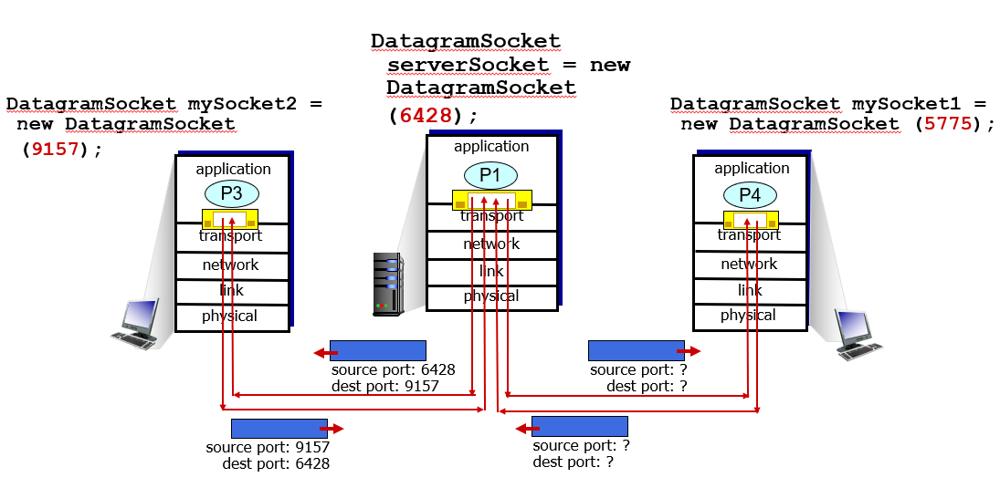
如果两个UDP报文段有不同的源IP地址或/和源端口号，那么这两个报文将通过相同的目的Socket被指定到相同的目的进程
Connection-oriented
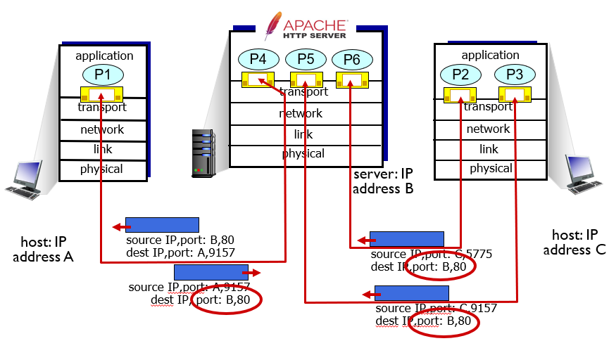
Three segments, all destined to IP address: B, dest port: 80 are demultiplexed to different sockets
UDP: User Datagram Protocol
UDP Segment Structure
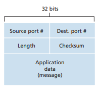
UDP Checksum
对报文中的所有比特字的和进行反码运算（异或运算），如有任何溢出都被回卷，若无改变最后结果应为：1111111111111
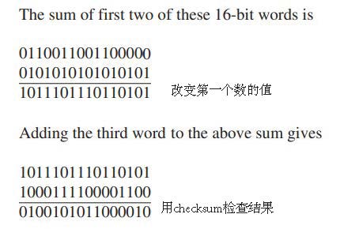
Principles of Reliable Data Transfer (RDT)
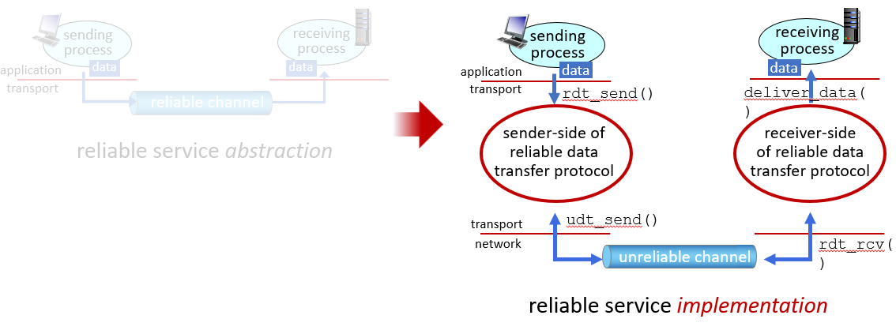
通过上层协议可靠使得下层的数据传输变得可靠
rdt 1.0: underlying channel perfectly reliable
假设底层信道是完全可靠的
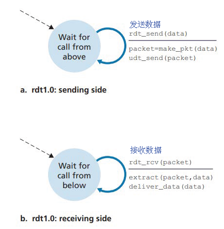
rdt 2.0: channel with bit errors (corrputed packet)
底层信道在分组中的比特可能受损
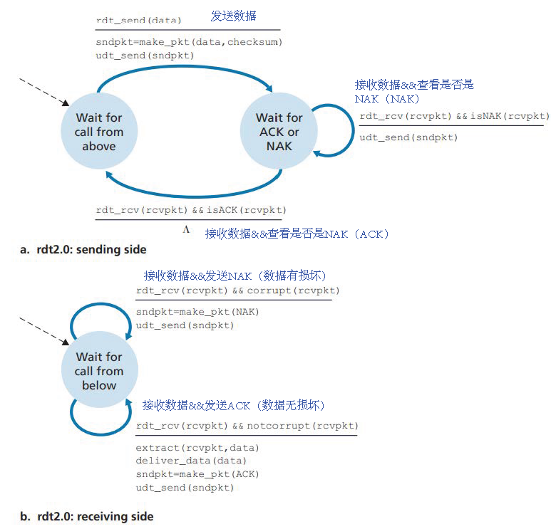
如果没有差错发送ACK，否则发送 NAK
rdt 2.1: handling duplicates
解决ACK和NAK受损的情况 ->2.0 发送方重发当前的数据分组->2.1处理这些重发的数据分组

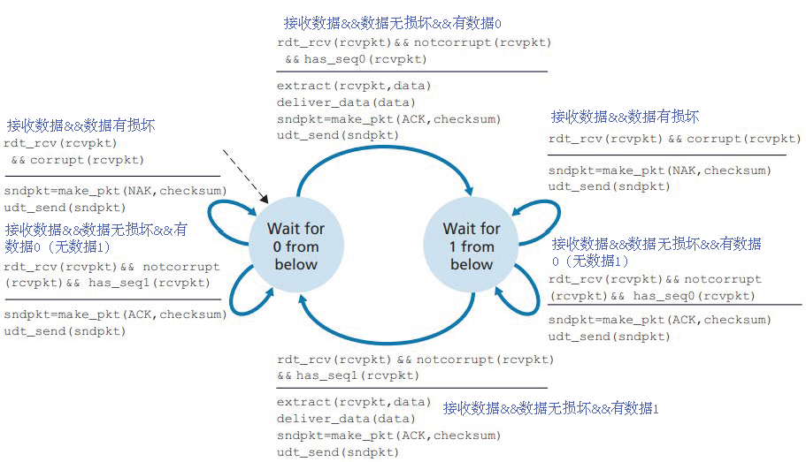
在数据分组中，添加新的字段，使发送方对其数据分组进行编号（sequence number），接收方通过检查序号确定是否是在重传
rdt 2.2: NAK-free (receiver ACK with seq#)
接收方发送ACK时也要有编号
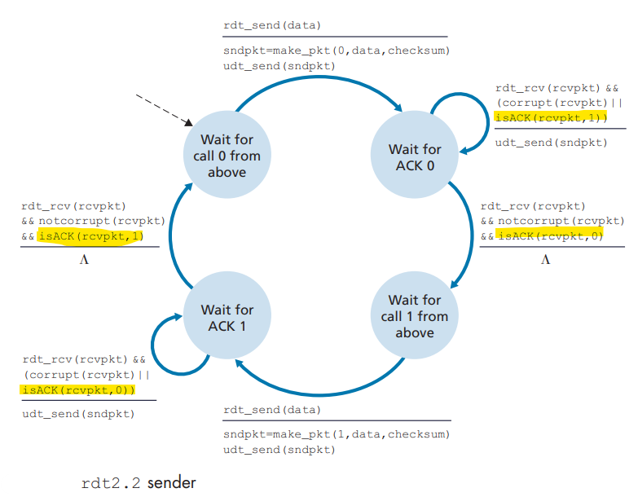
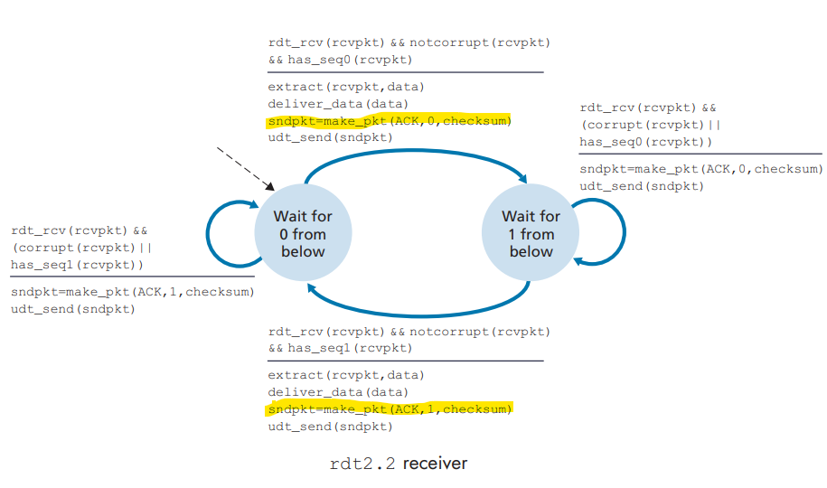
rdt 3.0: packet loss (timeout)
解决发送方不知道是数据分组丢失，ACK丢失，还是过度延迟
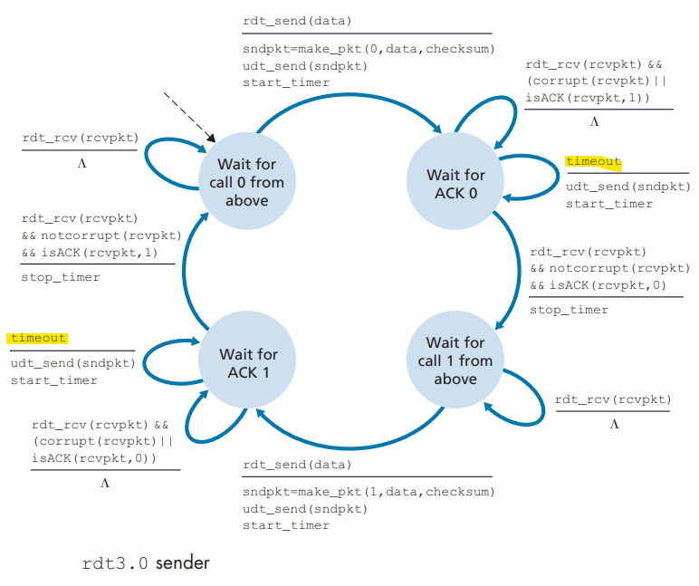
Pipelined rdt
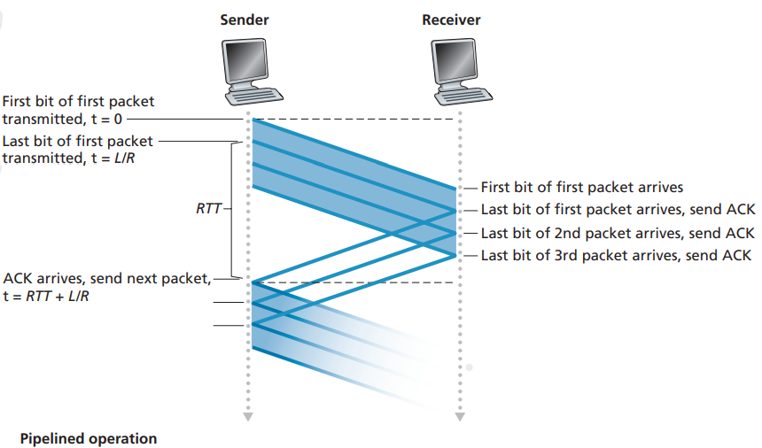
解决丢失，损坏及延时过大分组的方式
Go-Back-N (GBN)
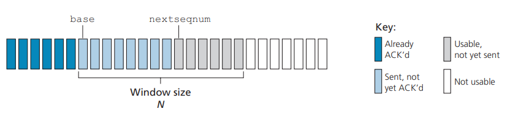
如果超时，发送方重传所有已发但未被确认的分组
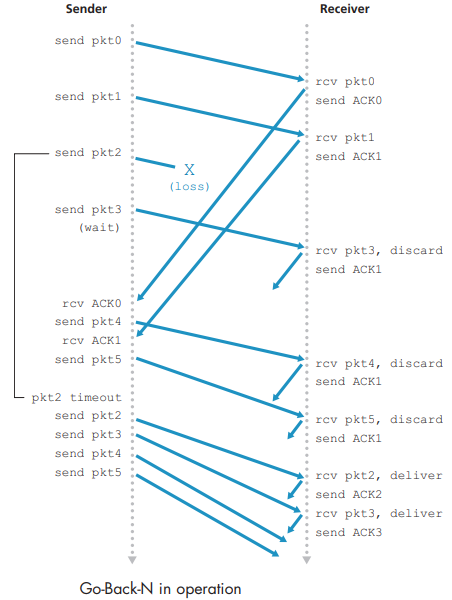
Selective Repeat (SR)
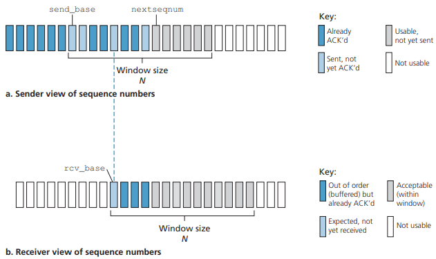
在接受方加一个缓存，用来存储未收到数据后边的数据
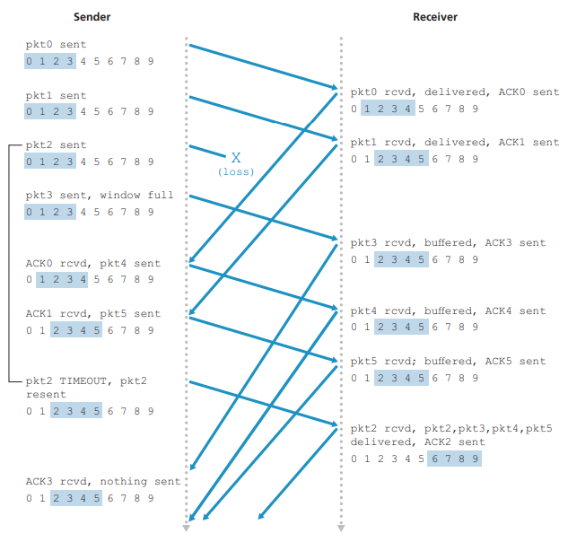
TCP(Transmission Control Protocol)
- point-to-point: one sender, one receiver
- reliable, in-order byte steam: no “message boundaries"
- full duplex data: bi-directional data flow in same connection; MSS: maximum segment size
- cumulative ACKs
- pipelining: TCP congestion and flow control set window size
- connection-oriented: 3-way handshaking
- flow controlled: sender will not overwhelm receiver
TCP Segment Structure

Sequence number: 用来实现可靠数据传输服务
ACK number：下一个应传的byte
rwnd：用于流量控制
TCP Sender and Receiver

往返时间的估计与超时
大多数TCP仅对某个时刻做一次SampleRTT测量 （$\alpha$ 推荐值为0.125）

DevRTT用于估算SampleRTT偏离EstimatedRTT的程度，波动越小，其值越小（$\beta$ 推荐值是0.25）

TimeoutInterval

TCP Retransmission Scenarios
The acknowledgment from B to A gets lost: In this case, the timeout event occurs, and Host A retransmits the same segment. Of course, when Host B receives the retransmission, it observes from the sequence number that the segment contains data that has already been received. Thus, TCP in Host B will discard the bytes in the retransmitted segment.

Neither of the acknowledgments arrives at Host A before the timeout :When the timeout event occurs, Host A resends the first segment with sequence number 92 and restarts the timer. As long as the ACK for the second segment arrives before the new timeout, the second segment will not be retransmitted.

The acknowledgment of the first segment is lost in the network, but just before the timeout event, Host A receives an acknowledgment with acknowledgment number 120. Host A therefore knows that Host B has received everything up through byte 119; so Host A does not resend either of the two segments.

Fast retransmit
When a segment is lost, this long timeout period forces the sender to delay resending the lost packet, thereby increasing the end-to-end delay.
Duplicate ACK : an ACK that reacknowledges a segment for which the sender has already received an earlier acknowledgment.
Three duplicate ACKs are received, the TCP sender performs a fast retransmit
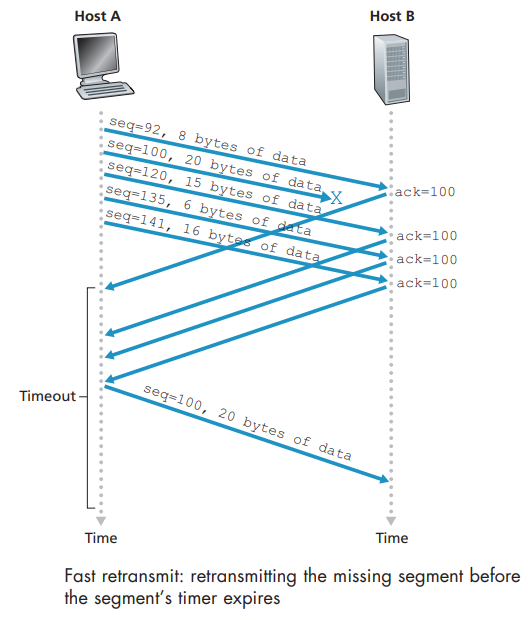
Selective acknowledgment: allows a TCP receiver to acknowledge out-of-order segments selectively rather than just cumulatively acknowledging the last correctly received, in-order segment. TCP ’s error-recovery mechanism is probably best categorized as a hybrid of GBN and SR protocols.
Flow Control[接收端把内容太多]
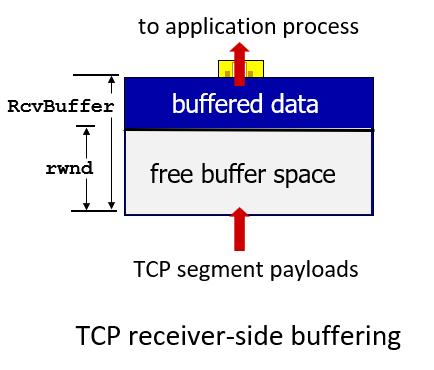
rwnd field
- TCP receiver “advertises” free buffer space in rwnd field in TCP header
- Sender limits amount of unACKed (“in-flight”) data to received rwnd

TCP Connection Management
Open a connection
Problems with 2-way handshake

3-way handshake
- The client-side TCP first sends a special TCP segment to the server-side TCP. This special segment contains no application-layer data. But one of the flag bits in the segment’s header , the SYN bit, is set to 1. For this reason, this special segment is referred to as a SYN segment
- Once the IP datagram containing the TCP SYN segment arrives at the server host (assuming it does arrive!), the server extracts the TCP SYN segment from the datagram, allocates the TCP buffers and variables to the connection, and sends a connection-granted segment to the client TCP. The connection-granted segment is referred to as a SYNACK segment.
- Upon receiving the SYNACK segment, the client also allocates buffers and variables to the connection. The client host then sends the server yet another segment; The SYN bit is set to zero, since the connection is established. This third stage of the three-way handshake may carry client-toserver data in the segment payload.
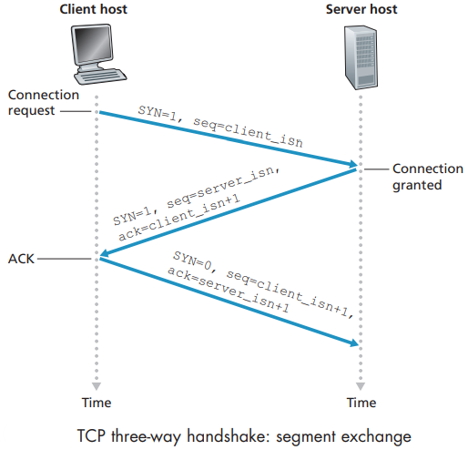
Close a connection
the client TCP to send a special TCP segment to the server process. This special segment has a flag bit in the segment’s header, the FIN bit set to 1. When the server receives this segment, it sends the client an acknowledgment segment in return. The server then sends its own shutdown segment, which has the FIN bit set to 1. Finally, the client acknowledges the server’s shutdown segment.
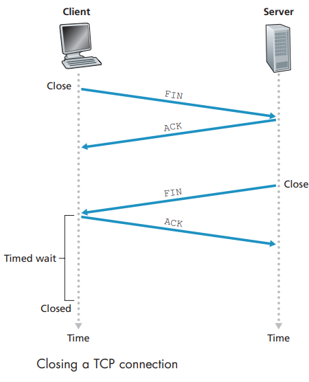
Congestion Control [网络中间及路由产生拥塞]
The problem of “congestion”
Scenario 1: Two Senders, a Router with Infinite Buffers
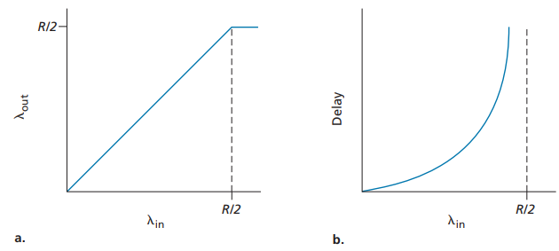
当发送速率接近于总吞吐量时，时延会疯狂上升
Scenario 2: Two Senders and a Router with Finite Buffers
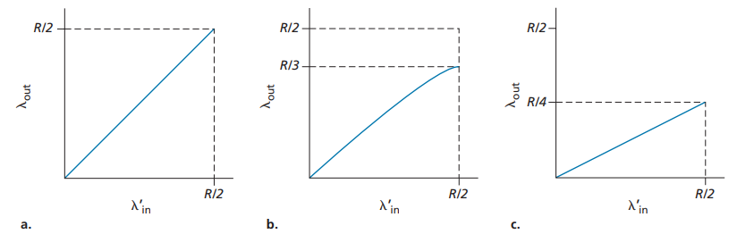
当发送速率上升， 总吞吐量上升缓慢
- Scenario 3: Four Senders, Routers with Finite Buffers, and Multihop Paths
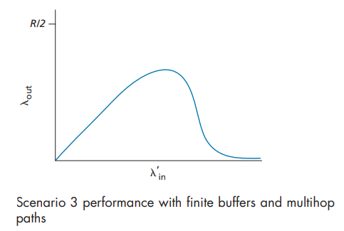
会出现两条路相互竞争的现象
Approaches
- End-end congestion control (inferred from loss and delay)：the network layer provides no explicit support to the transport layer for congestion-control purposes. TCP takes this end-to-end approach toward congestion control
- Network-assisted congestion control (TCP ECN bit)：With network-assisted congestion control, routers provide explicit feedback to the sender and/or receiver regarding the congestion state of the network. This feedback may be as simple as a single bit indicating congestion at a link.
Congestion Control Algorithm: AIMD
限制发送的流量：
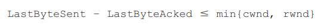
cwnd: 拥塞窗口（Congestion Control）
rwnd：接收窗口（Flow Control）
如何感知路径上发送拥塞：
the occurrence of either a timeout or the receipt of three duplicate ACKs from the receiver.
怎样确定发送的速率：
TCP AIMD
TCP slow start
Additive Increase： Increase sending rate by 1 maximum segment size every RTT until loss detected（整个速率以次方增长）
Multiplicative Decrease：
- TCP Reno: cut in half on triple duplcate ACKs
- TCP Tahoe: cut to 1 MSS on timeout

Congestion avoidance
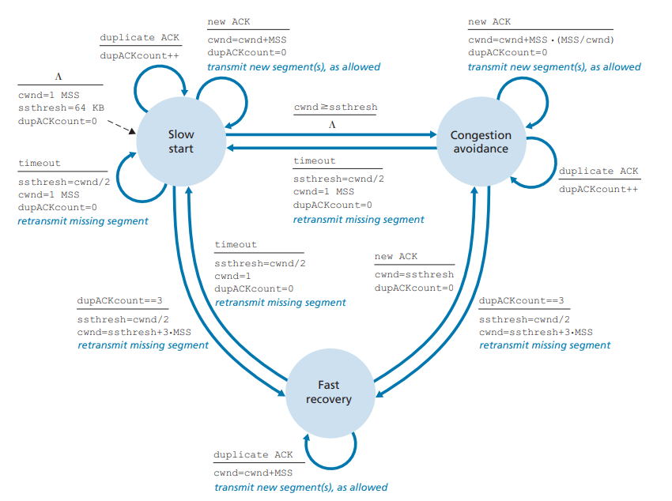
Tahoe
Tahoe是TCP的最早版本，其主要有三个算法去控制数据流和拥塞窗口。
Slow Start（慢启动） （ssthresh：slow start thresh，慢启动门限值） 当cwnd的值小于ssthresh时，TCP则处于slow start阶段，每收到一个ACK，cwnd的值就会加1。 仔细分析，其实慢启动并不慢，经过一个RTT的时间，cwnd的值就会变成原来的两倍，实为指数增长。 Congestion Avoidance（拥塞避免） 当cwnd的值超过ssthresh时，就会进入Congestion Avoidance阶段，在该阶段下，cwnd以线性方式增长，大约每经过一个RTT，cwnd的值就会加1 Fast Retransmit（快重传） 按照拥塞避免算法中cwnd的增长趋势，迟早会造成拥塞（一般通过是否丢包来判断是否发生了拥塞）。 如果中网络中发生了丢包，通过等待一个RTO时间后再进行重传，是非常耗时的，因为RTO通常设置得会比较大（避免伪重传：不必要的重传）。 快重传的思想是：只要发送方收到了三个重复的ACK（如果不了解三个重复ACK如何产生，请温故一下滑动窗口协议），就会立马重传，而不用等到RTO到达（如果没有3个重复的ACK而包丢失了，就只能超时重传）； 并且将ssthresh的值设置为当前cwnd的一半，而cwnd减为1，重回slow start阶段。
Reno
除了包含Tahoe的三个算法，Reno多了一个Fast Recovery（快速恢复）算法。
当收到三个重复的ACK或是超过了RTO时间且尚未收到某个数据包的ACK，Reno就会认为丢包了，并认定网络中发生了拥塞。 Reno会把当前的ssthresh的值设置为当前cwnd的一半，但是并不会回到slow start阶段，而是将cwnd设置为（更新后的）ssthresh+3MSS，之后cwnd呈线性增长。